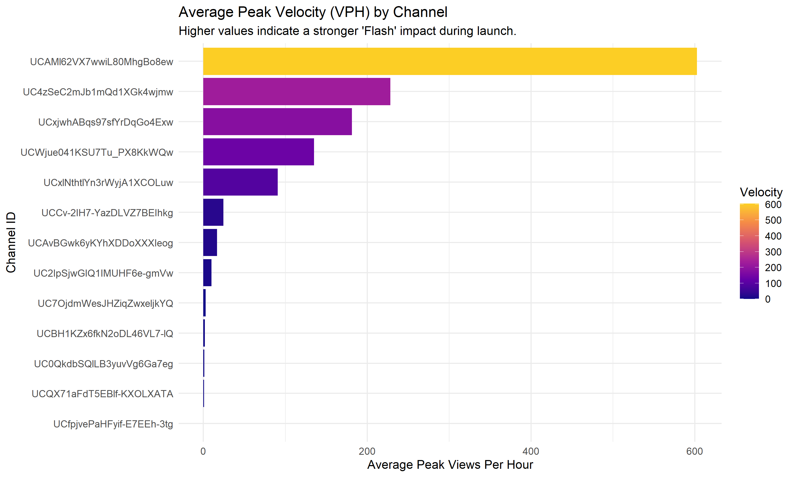
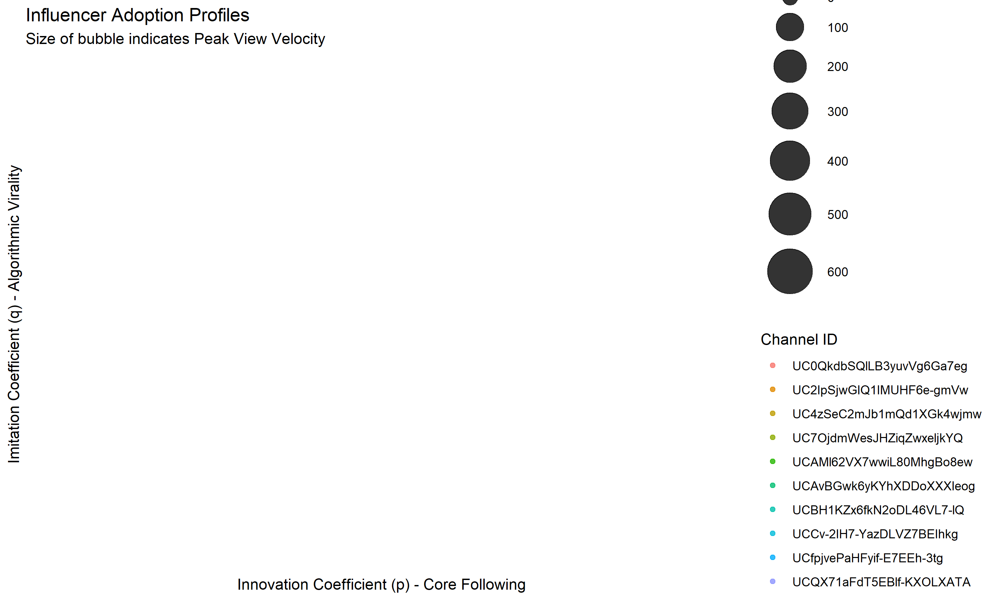
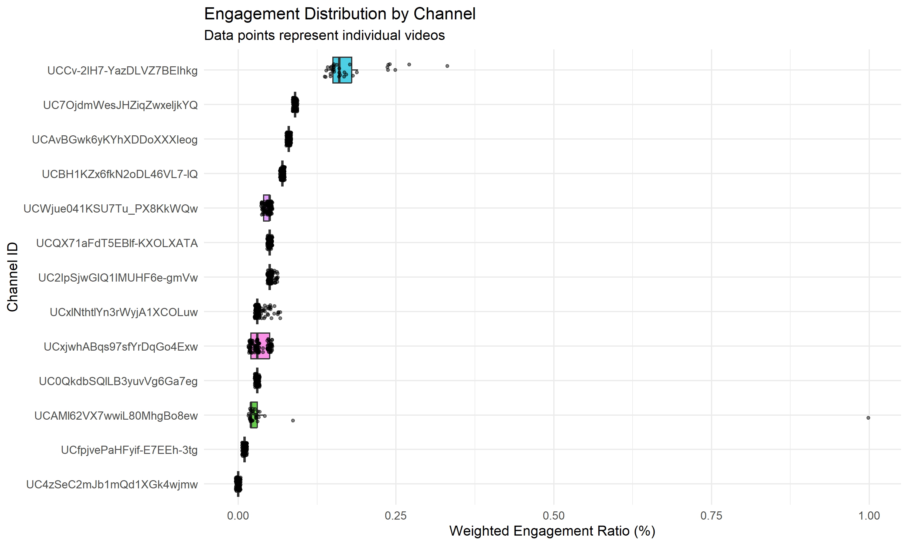

This report tracks the performance dynamics of influencers active in the current tracking window. The dataset is filtered to only include videos that have been actively tracked for at least 48 hours.
What this measures: View Velocity measures the raw "Hype" and FOMO generated by the creator. It indicates how many viewers have notifications turned on and watch immediately.

What this measures: Mapping Bass Diffusion metrics to determine how the influencers audience grows: Coefficient of Innovation (p) driven by dedicated followers vs Coefficient of Imitation (q) driven by algorithm/sharing.

What this measures: Ratio of (Likes + 2x Comments) / Views. High engagement strongly correlates with viewer satisfaction, intent to purchase, and CTR.
